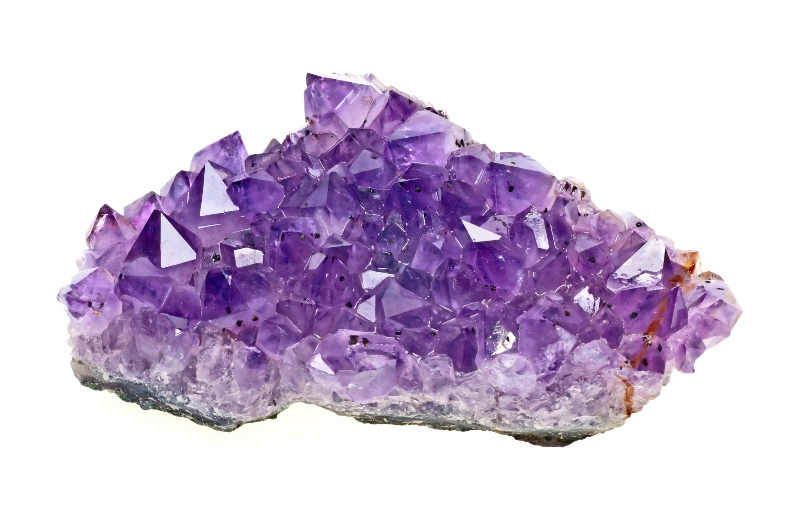

Quartz is our most common mineral. Quartz is made of the two most abundant chemical elements on Earth: oxygen and silicon. Atoms of oxygen and silicon join together as tetrahedrons (three sided pyramids). These stack together to build crystals. Billions of tetrahedrons are needed to build even a small crystal.
Quartz:
- Quartzite
- Amethyst
 Rose quartz
Rose quartz- Citrine
- Agate
 Smoky quartz
Smoky quartz